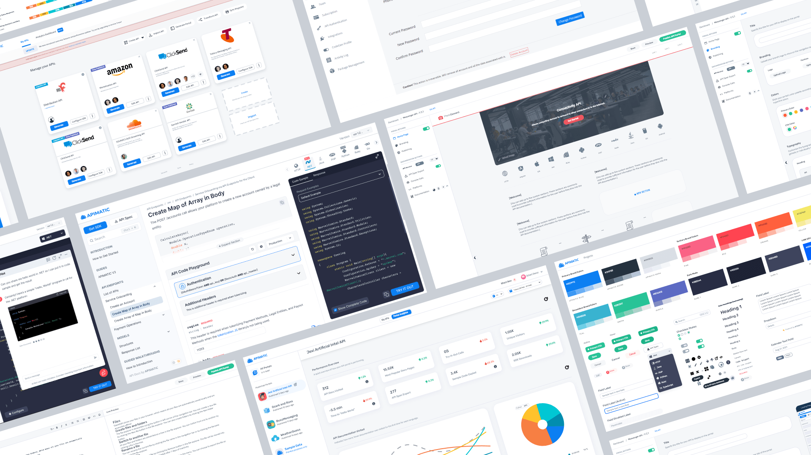
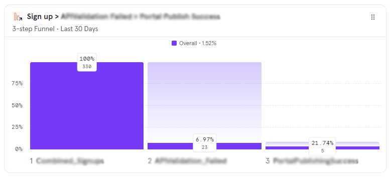
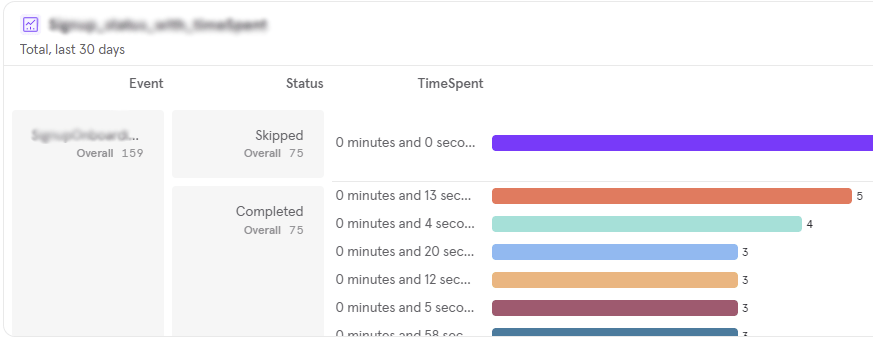
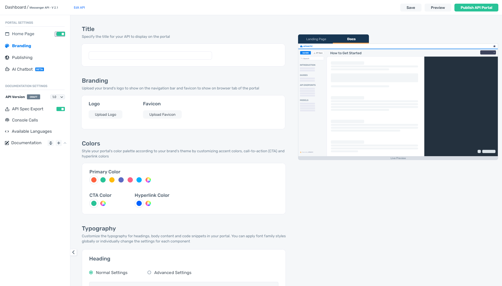
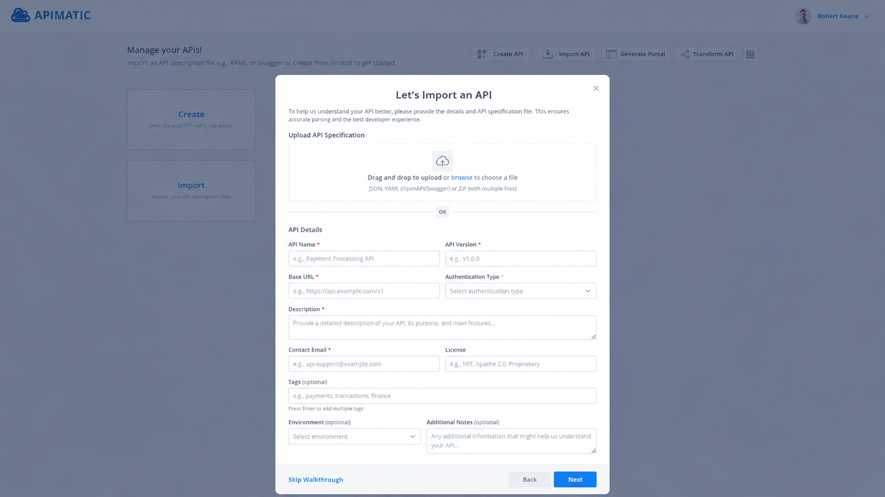
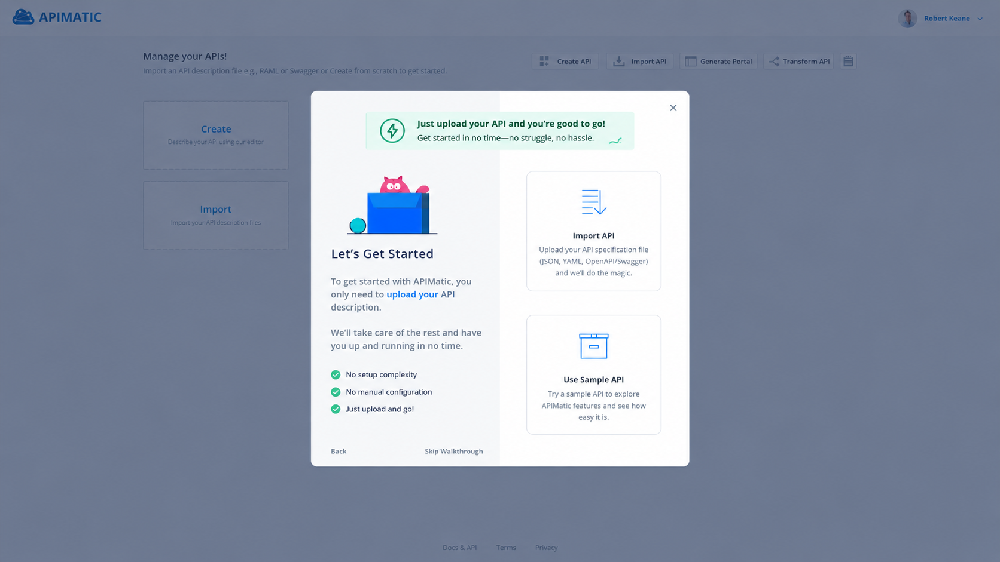
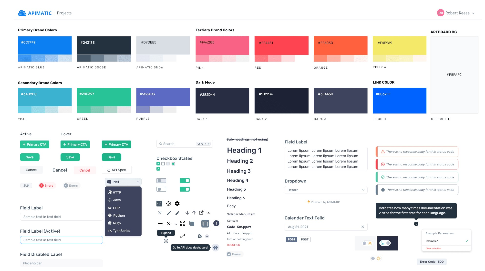

APIMatic
Developer Experience Transformation
How a data-driven redesign of onboarding, portal configuration, and developer workflows improved retention by 73.33% and onboarding completion by 30.38%.
On this page: Overview • Discovery & Constraints • Context • Ecosystem • Research • Problems • Principles • Design System • Results • Reflection • Impact & Outcomes

The Situation
APIMatic shipped v1 with functional features but broken flows that caused enterprise clients to lose developer audiences. The brief: find what is broken, fix it, and keep at-risk clients.
Why It Mattered
Developer abandonment cascades: failed integrations → unhappy enterprise clients → churn. Fixing onboarding and Project Titan configuration directly preserved client value.
Research scope
Formal generative research was not part of the delivery model for this engagement. We treated the available product context and analytics as the discovery foundation for a rapid remediation effort.
Discovery inputs
Discovery drew on Mixpanel and Clarity analytics, support ticket review, stakeholder alignment, and internal portal documentation. Engineering feedback and client operations insight filled in practical detail.
Assumptions & validation
It was assumed that onboarding friction and configuration complexity were the highest sources of churn. Those assumptions were validated through iterative design revisions and by tracking the impact of each UI change against the analytics baseline.
How users relate across the product
Mixpanel
Funnel analysis identified where users dropped off in onboarding and configuration flows.
Microsoft Clarity
Session recordings and rage-click analysis revealed broken explorer auth handoffs and UI friction points.
A/B Testing
Validated changes at enterprise scale before rolling out broadly; measured retention and onboarding improvements.
Four high-impact issues
No Feedback Loop
Portal configuration produced outputs without live validation or preview.
Evidence: Clarity recordings showing broken portals after generation.
Impact: Client escalations and churn risk.
Value After Forms
Onboarding required too much upfront data before delivering the first portal.
Evidence: Mixpanel funnel cliff mid-form.
Impact: Low onboarding completion.
Broken Error States
Interactive explorer returned non-actionable errors during authentication handoff.
Evidence: Rage clicks concentrated on explorer auth inputs (Clarity).
Impact: Developers abandoned integration attempts.
No Design System
Inconsistent components and interactions across product flows reduced credibility.
Evidence: Visual inconsistencies across onboarding and configuration screens.
Impact: Slower delivery and lower client trust.
Behavioral analytics and session recordings exposed where users struggled, abandoned workflows, and failed to reach value. These findings directly informed the redesign priorities.

Onboarding Drop-Off
Users were abandoning onboarding before experiencing the value of the platform. The process prioritized data collection over product activation, creating friction early in the journey.

Session Recording Analysis
Microsoft Clarity recordings revealed repeated confusion around portal configuration and authentication setup. Users frequently retried actions without understanding what was required.

Explorer Failure Patterns
Error states provided little context, making it difficult for users to distinguish API issues from configuration mistakes. This often resulted in failed testing and abandonment.
Show Output Before Input
Generated portal appears immediately after 3-field spec upload. Users see value before committing to full configuration, increasing onboarding completion.
Earn Commitment Progressively
Minimal upfront data, then reveal additional configuration fields as needed. Progressive disclosure reduces abandonment from form fatigue.
Design Error States
Explorer errors show actionable recovery paths: "Auth failed — reconnect wallet" with a direct button, not silent failures that cause rage clicks.
Maintain Technical Credibility
Consistent typography, component language, and validation messaging across all screens. Enterprise clients equate visual polish with technical reliability.
Validate Through Data
Every design change validated through A/B testing before broader rollout. Mixpanel and Clarity revealed which fixes moved the needle on retention and completion metrics.
Project Titan Redesign

Weak feedback loop: users configured portals without knowing if choices were compatible.
Convert Titan from linear wizard to configuration + live preview with inline validation.
Engineering cost for preview vs. lower broken outputs.
Fewer broken portals and improved enterprise confidence.
Onboarding Redesign
Before

After

Interactive Explorer Fixes
Fixes
- Corrected authentication handoff
- Clear, actionable error messages
- Recovery guidance and retry paths
Why building a system first mattered
Before redesigning onboarding and workflows, I established a scalable design system that unified components, interaction patterns, and visual language across the platform. This foundation enabled faster iteration, consistent user experiences, and more efficient collaboration with engineering.

From research to iteration
Enterprise Portal Creation
Fast, branded portals without engineering work.
Developer Self-Service
Interactive explorers and SDKs that work reliably.
Scalable API Adoption
Reduce friction for thousands of developer integrations.
Design learnings and next steps for APIMatic
Product momentum through data-informed design
Data-led fixes and progressive onboarding delivered measurable retention gains while restoring confidence in the developer experience. The work proved that better feedback and clearer flow signals reduce user friction.
Bandwidth shaped priority decisions
Sole designer capacity and a tight test cycle meant focusing on the highest-risk flows first. That disciplined prioritization improved core value delivery, but it also left some system-level polish for later phases.
Scale the design system beyond onboarding
Longer A/B windows and dedicated design resource would enable deeper component consistency across developer tools. Expanding the system to portal configuration and docs would reduce future rework and strengthen enterprise trust.